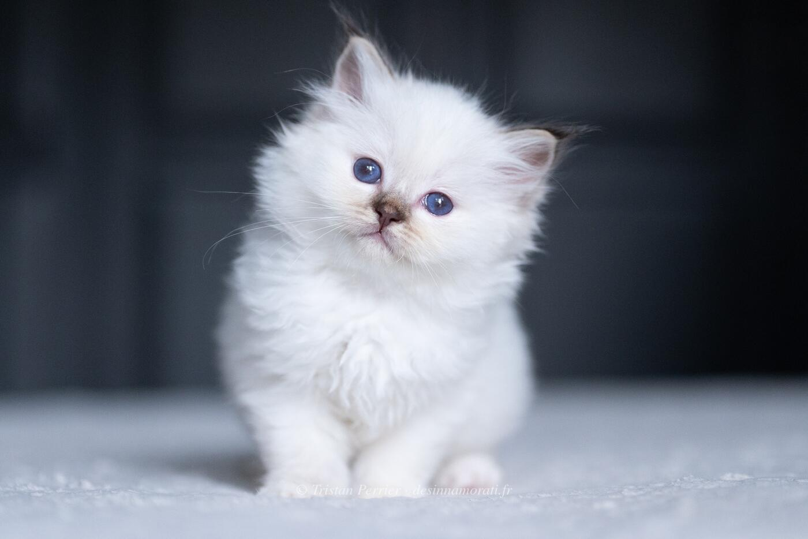

Un Chouïa Craquante Aka Cracotte des Innamorati
Femelle · Chocolat tortie tabby point
RobeFemelle · Chocolat tortie tabby point
Naissance22 juillet 2023
ParentsT'as Pas Vu Pépette des Innamorati × Taran du Bas de Lock
TitresKCH · JCH
StatutReste à la maison
Album8 photos, de septembre 2023 à décembre 2025


Palmarès
4 expositions · 9 jugements · 1 Best in Show2024
- SurgèresCACJ
- SurgèresCACJ · NOM
- Ancenis Saint GéréonCACJ · NOM
- Ancenis Saint GéréonCACJ
- Paris VersaillesCACC · NOM
- Paris VersaillesCACC · NOM
- Paris VersaillesCACC · NOM
- Le Taillan BordeauxCACC · NOM
- Le Taillan BordeauxCACC · NOM · BIS
EXC Excellent (classement) · CAC, CACIB, CAGCIB, CACS certificats de champion, champion international, grand champion international et suprême · CAP, CAPIB, CAGPIB, CAPS équivalents pour les chats stérilisés · BIV meilleur de la variété · NOM nommé pour le Best in Show · BIS Best in Show · BOB Best of Best, le meilleur de toute l’exposition
Photos réduites et marquées. Elles appartiennent à la Chatterie des Innamorati et ne peuvent pas être reprises dans une annonce.